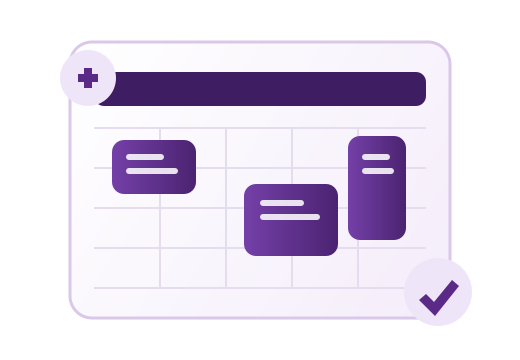

Enrollment Planning
Find courses and draft your weekly schedule.
Search official College of Science offerings, compare sections, and add classes to a conflict-aware calendar.

0Courses
0Departments
0Hybrid
0Online
Finder
Find your subjects
Search by course code, faculty, room, section, mode, or department, then add entries to your schedule.
Help Center
How to use COSFinder
A quick tutorial and practical tips for building a cleaner, conflict-aware schedule.
Quick Tutorial
- Log in with your ID.Enter your ID in the format 12xxxxxx. You can save it locally in the browser.
- Search for courses.Use the search box for course code, faculty, room, section, mode, or department.
- Narrow the results.Use filters for day, start time, mode, restricted courses, and courses that fit your current schedule.
- Compare sections.When a course has multiple sections, COSFinder groups them so you can compare time, faculty, room, and mode faster.
- Add classes.Click Add on a course card. Added classes appear in the Calendar tab.
- Check conflicts.Conflicting blocks are highlighted. Hover over a calendar block to expand it and view full details.
- Name your schedule.Write a clear schedule title before saving or exporting so you can tell versions apart.
- Save presets.Use Save Preset to keep multiple schedule drafts inside your browser.
- Export your plan.Download your schedule as PDF, PNG, JPG, or Excel. Exports include your title, student ID, and generation date.
How to Maximize COSFinder
Frequently Asked Questions
1. What is COSFinder?
COSFinder is a local course finder and schedule planner for College of Science offerings.
2. What ID format should I use?
Use an 8-digit ID that starts with 12, following the format 12xxxxxx.
3. Is my ID sent online?
No. The ID is only stored in your local browser if you choose to save it.
4. How do I add a class?
Go to Course Finder, choose a course card, then click Add.
5. How do I remove a class?
Click a class block in the calendar, or use the remove button in the mobile schedule view.
6. Can I undo a removal?
Yes. After removing or resetting, use the Undo button in the confirmation message.
7. How does conflict detection work?
COSFinder compares selected courses by day and time. Overlapping classes are marked as conflicts.
8. What does "Fits current schedule" mean?
It hides courses that would overlap with classes already in your calendar.
9. What does "Restricted only" show?
It filters the results to courses marked as restricted in the copied course data.
10. How do saved presets work?
Write a schedule title, add classes, then click Save Preset. Presets are saved in your browser.
11. Can I save multiple schedules?
Yes. Use different titles before clicking Save Preset so each draft is easy to identify.
12. What file formats can I export?
You can export your schedule as PDF, PNG, JPG, or Excel.
13. Why should I add a schedule title?
The title appears in exported files and helps distinguish multiple schedule versions.
14. Does COSFinder work on mobile?
Yes. The layout adapts to smaller screens and uses a mobile-friendly schedule list.
15. Why does the calendar look different on mobile?
The full weekly grid is too wide for small screens, so COSFinder switches to readable day-by-day cards.
16. Can I compare sections of the same course?
Yes. Repeated course codes are grouped with a comparison header in the results.
17. Why are some course cards color-coded?
Department accents make it easier to scan Physics, Math and Stats, Chemistry, and Biology offerings.
18. Can I reset the whole calendar?
Yes. Open the Calendar tab and click Reset Calendar. COSFinder asks for confirmation first.